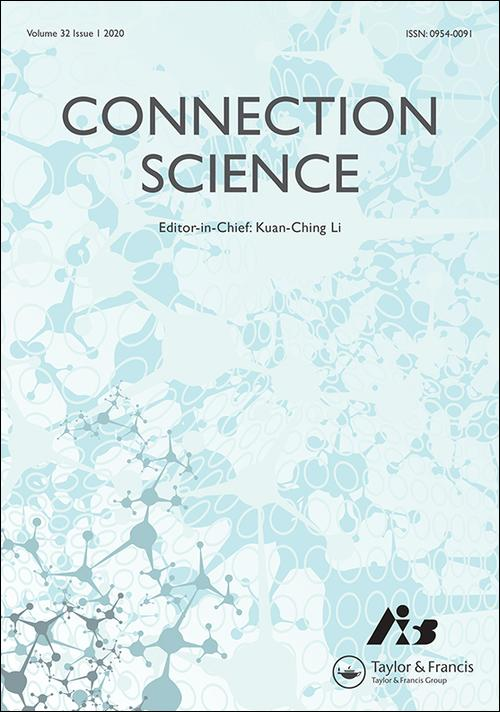
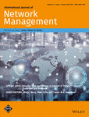
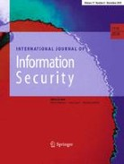

About EISA 2021
With recent evolution of adversarial techniques, intrusions have become more complex that may threaten the security of various assets regarding information and applications. In addition, coordinated intrusions like worm outbreak can continue to be a major threat to information, system and network security in the near future. The popularity of Internet may generate a large volume of different types of sensitive information. Therefore, there is a need for emerging techniques, theories and applications to protect information and practical security.
The Second International Symposium on Emerging Information Security and Applications (EISA) aims to provide a platform for researchers and practitioners across the world to exchange their ideas. It seeks original submissions that discuss practical or theoretical solutions to enhance the information and application security in practice.
A best paper award will be granted to the qualified papers.
Good quality papers will be invited to journal special issues: Wireless Communications and Mobile Computing, Connection Science,
Sensors, Electronic, International Journal of Network Management, and International Journal of Information Security
-------------------------------------
Topics of interest include, but are not limited to the ones listed below.
- Cyber intelligence techniques
- Multimedia security
- Malware and unwanted software
- Vulnerability analysis and reverse engineering
- Usable security and privacy
- Intrusion detection and prevention
- Authentication and access control
- Anonymity and privacy
- Cryptographic protection
- Digital forensics
- Cyber physical systems security
- Adversarial learning
- Security measurement
- Security management and policies
- Hardware and physical security
-------------------------------------
Important Dates:
(Late Track Round)
Submission Deadline: 15 August, 2021 / 10 September, 2021 (Firm! 23:59 AoE)
Acceptance Notification: 15 September, 2021 / 30 September 2021
Camera Ready: 30 September, 2021
(The Second Round)
Submission Deadline: 15 June, 2021 (23:59 AoE)
Acceptance Notification: 15 July, 2021
Camera Ready: 30 July, 2021
(The First Round)
Submission Deadline: 1 May 15 May, 2021 (23:59 AoE)
Acceptance Notification: 15 June, 2021
Camera Ready: 30 July, 2021
Conference dates: 12-13 November, 2021
-------------------------------------
For questions, please contact us at:
eisa2021@easychair.org.
Organized by:
Technical University of Denmark, Denmark
Norwegian Center for Cybersecurity in Critical Sectors, Norway
Central China Normal University, China
News & Updates
2 February, 2022 The proceedings can be downloaded: Link.
16 August, 2021 The final deadline is 10 September 2021.
16 June, 2021 EISA 2021 will be moved to 12-13 November 2021 (be part of a security week with CSS 2021).
16 May, 2021 The second round deadline is 15 June 2021.
30 April, 2021 The deadline of EISA 2021 has been extended to 15 May.
18 April, 2021 EISA 2021 will be published in Springer CCIS. A best paper award will be granted.
10 March, 2021 EISA 2021 website is online.
Keynote Speakers
--
Professor Yang Xiang
Affiliation: Swinburne University of Technology, Australia
Title: Software Vulnerability Detection: From Fuzzing to Deep Learning
Abstract
Cyber security has become one of the top priorities in the research and development agenda globally today. New and innovative cyber security technologies that can effectively address this pressing danger are critically needed. Data-driven and system approaches to solve cyber security problems have been increasingly adopted by the cybersecurity research community. They have two areas of focus: detection and prediction of cyber threats. Recently, there have been significant efforts to detect software vulnerabilities. New methods and tools, consequently, must follow up to adapt to this emerging security paradigm. In this talk, we introduce the current research and trend in the software vulnerability detection research. Then we will present a series of novel approaches to deal with the vulnerability issues, such as the fuzzing, deep learning, and the combined approach to improve the effectiveness of the detection. The focus of the fuzzing approach is on automatic black-box fuzzing especially for firmware; and the focus of the deep learning approach is to reduce the training samples and improve the detection rate.
Bio
Professor Yang Xiang received his PhD in Computer Science from Deakin University, Australia. He is currently a full professor and the Dean of Digital Research & Innovation Capability Platform, Swinburne University of Technology, Australia. His research interests include cyber security, which covers network and system security, data analytics, distributed systems, and networking. In the past 20 years, he has been working in the broad area of cyber security, which covers network and system security, AI, data analytics, and networking. He has published more than 300 research papers in many international journals and conferences. He is the Editor-in-Chief of the SpringerBriefs on Cyber Security Systems and Networks. He serves as the Associate Editor of IEEE Transactions on Dependable and Secure Computing and IEEE Internet of Things Journal, and the Editor of Journal of Network and Computer Applications. He served as the Associate Editor of IEEE Transactions on Computers and IEEE Transactions on Parallel and Distributed Systems. He is the Coordinator, Asia for IEEE Computer Society Technical Committee on Distributed Processing (TCDP). He is a Fellow of the IEEE.
Professor Zheng Yan
Affiliation: Xidian University & Aalto University
Title: Highly Efficient Network Security Analysis Based on Sketches
Abstract
Network security analysis is crucial for managing and maintaining cyberspace security. By analyzing host cardinality, network flow and network behavior, it is possible to understand network status and measure its security level. However, with the continuous expansion of network scale, big-volume data makes network security analysis inefficient in terms of data analysis and storage. Data compression and fusion (e.g., using sketches) can reduce resource consumption, thus has great advantages in terms of time and memory efficiency. But the literature still faces a number of challenges with regard to abnormal address reconstruction efficiency, distributed and parallel processing, adaptive memory consumption, protocol independence and generality. We conducted research on highly efficient network security analysis by constructing several novel sketches to overcome the above challenges. In this talk, I will introduce our recent research results about using reversible sketches to quickly trace abnormal network nodes in DDoS attacks, applying a 3D SuperSketch to measure host cardinalities in a general way, and constructing an ExtendedSketch to greatly reduce storage consumption for super host identification.
Bio
Zheng Yan is a HuaShan distinguished professor at the School of Cyber Engineering, Xidian University, China and a visiting professor and Finnish Academy Fellow at the Aalto University, Finland. She received the Doctor of Science in Technology from the Helsinki University of Technology (current Aalto University), Finland. Before joining academia in 2011, she was a senior researcher at the Nokia Research Center, Helsinki, Finland, since 2000. Her research interests are in trust, security, privacy, and security-related data analytics, which lead to 300+ peer reviewed scientific articles published in highly reputable journals and conferences, two solely authored books and 9 conference proceedings. She is an inventor of 36 granted US/EU/Japan patents and 50 PCT patents, all of them having been adopted in industry. Some of her patented techniques have been adopted by international standards and widely used in practice. She is an area or associate editor of Information Fusion, IEEE Internet of Things Journal, IEEE Network Magazine, Information Sciences, and JNCA, etc. She served as a general chair or program chair for 30+ international conferences including IEEE TrustCom2015, NSS/ICA3PP/IEEE CIT 2017, IEEE Blockchain2018, IEEE ATC2019, and IFIP Networking 2021. She is a founding steering committee co-chair of IEEE Blockchain conference. She received many awards in recent years, including Distinguished Inventor Award of Nokia (2020) for her significant technology contributions, Aalto ELEC Impact Award (2020) for patent contributions to Finnish society, the 2017 Best Journal Paper Award issued by IEEE Communication Society Technical Committee on Big Data, the Best Paper Award of SpaCCS2019, several IEEE Outstanding/Distinguished Leadership Awards (2014, 2015, 2017, 2018, 2019), and the Outstanding Associate Editor of 2017/2018 for IEEE Access. She is a fellow of IET and a senior member of IEEE.
Professor Xiaodong Lin
Affiliation: University of Guelph, Canada
Title: File Carving - Challenges and Research Directions
Abstract
It is not unusual that we accidentally deleted an important file or lost files after a computer crash. Also, it is very often that criminals try to hide their wrongdoings by deleting digital evidences (e.g., downloaded illicit images or stolen confidential data or trade secret), which could indict them in the court. Therefore, it has been in high demand to recover deleted or lost files, for example, during an investigation. In this talk, we will discuss technological advances in file recovery techniques. Specifically, we look at file carving techniques, which is the process of reconstructing files based solely on their contents. Also, we identify and discuss major challenges and research issues to be addressed in the development of file carving solutions. For example, privacy concerns may keep many people from assisting with an investigation or seeking professional assistance since they are afraid of embarrassment and humiliation, especially, when sensitive data are involved.
Bio
Xiaodong Lin received the PhD degree in Information Engineering from Beijing University of Posts and Telecommunications, China, and the PhD degree (with Outstanding Achievement in Graduate Studies Award) in Electrical and Computer Engineering from the University of Waterloo, Canada. He is currently a full Professor in the School of Computer Science, University of Guelph, Canada. His research interests include wireless communications and network security, computer forensics, software security, and applied cryptography. Dr. Lin serves as an Associate Editor for many international journals. He has served or is serving as a guest editor for many special issues of IEEE, Elsevier and Springer journals and as a symposium chair or track chair for IEEE/ACM conferences. He also served on many program committees of international conferences. He was Chair of Communications and Information Security Technical Committee (CISTC) - IEEE Communications Society (2016-2017). He is a Fellow of the IEEE.
SA/Professor Chunhua Su
Affiliation: University of Aizu, Japan
Title: Blockchain and Machine Learning Aided Security Framework for
Internet of Things
Abstract
The Internet of Things (IoT) is a revolutionary innovation that seamlessly integrates an enormous number of smart objects within the Internet. It is imperceptibly affecting the way of human life and work. IoT devices form a core part of the IoT network and cryptographic technique is a core mechanism for secure endpoints. In this talk, the speaker will provide a high-level introduction to his recent research of IoT endpoint security based on blockchain and machine learning. Firstly, he introduces requirements followed by a discussion on cryptographic algorithm implementation. He will mainly focus on an overview of efficient cryptography for IoT endpoints and system privacy issues. Nonetheless, many security issues occur with the widespread deployment of an IoT-enable environment, e.g., centralized register authority and potential Distributed-Denial-of-Service (DDoS) attack. We mainly focus on solving some identity authentication issues remaining in the IoT related application. Combined with blockchain, cryptographic protocols, dynamic Join-and-Exit mechanism and batch verification, a reliable and efficient security mechanism is proposed for smart IoT services. We also present our recent research results on machine learning applications in IoT security which is a crucial aspect for the cloud-based service in an IoT-enable environment. We will introduce our novel federated learning system which can both reduce the communication time by layer-based parameter selection and enhance the privacy protection by applying local differential privacy mechanism on the selected parameters.
Bio
Chunhua Su received the B.S. degree for Beijing Electronic and Science Institute in 2003 and received his M.S. and PhD of computer science from Faculty of Engineering, Kyushu University in 2006 and 2009, respectively. He is currently working as a Senior Associate Professor in the Division of Computer Science, University of Aizu. He has worked as a postdoctoral fellow in Singapore Management University from 2009-2011 and a research scientist in the Cryptography & Security Department of the Institute for Infocomm Research, Singapore from 2011-2013. From 2013-2016, he has worked as an Assistant professor in School of Information Science, Japan Advanced Institute of Science and Technology. From 2016-2017, he worked as Assistant Professor in Graduate School of Engineering, Osaka University. His research interests include cryptanalysis, cryptographic protocols, privacy-preserving technologies in machine learning and IoT security & privacy. He has published more than 100 papers in international journals and conferences.
Dr Wenjuan Li
Affiliation: The Hong Kong Polytechnic University, China
Title: Passive Message Fingerprint Attacks on Challenge-based Collaborate Intrusion Detection Networks
Abstract
Trust management is important for building a secure distributed environment against insider attacks, and it is the same for collaborative intrusion detection, which can enhance the detection accuracy by allowing different nodes to share required information and data. Under challenge-based CIDN, a node can send a special message called challenge to test the reputation of a target node. However, cyber attackers may still take advantage of some advanced insider attacks to compromise such system. In this talk, we introduce passive message fingerprint attack (PMFA) and analyze how to defeat such advanced attack in practice.
Bio
Wenjuan Li received her Ph.D. degree in Computer Science from the City University of Hong Kong, Hong Kong. She received both Research Tuition Scholarships and Outstanding Academic Performance Award during the doctorate studies. She is currently a Research Assistant Professor in the Department of Electronic and Information Engineering, The Hong Kong Polytechnic University, China. She was a Winner of Cyber Quiz and Computer Security Competition, Final Round of Kaspersky Lab "Cyber Security for the Next Generation" Conference in 2014. Her research interests include network management and security, intrusion detection, spam detection, trust management, web technology, blockchain and E-commerce security.
A/Professor Cristina Alcaraz
Affiliation: University of Malaga, Spain
Title: On the Evolution of OCPP-based Charging Infrastructures: Threats and Countermeasures
Abstract
We are increasingly witnessing how Electric Vehicles (EVs) are having a great acceptance and impact on everyday life, as well as their charging infrastructures that are part of the well-known microgrid-based systems. The vast majority of their cyber-physical systems are prone to multiple types of (cyber)attacks, affecting not only their own physical and logical elements, including their communication systems, but also putting at risk the energy resources of the microgrid itself. In this Keynote, we will focus the study on the security of EV charging infrastructures, whose management can rely heavily on the de facto OCPP protocol to control components and energy transactions, as well as the implications of the new stakeholders in this management process. That is, the objective of this presentation is to analyze the evolution of the protocol, exploring some interesting threats in the latest version of OCPP and possible countermeasures. For the latter, the most recent recommendations given by European experts in the supply chain field are introduced, although adapted to the energy context.
Bio
Cristina Alcaraz is an Associate Professor at the Computer Science Department of the University of Malaga (UMA). She has been awarded with two competitive postdoctoral fellowships: Marie-Curie in 2012 and Ramon-y-Cajal in 2015, and was a guest researcher at NIST (2011-2012) visiting later the Royal Holloway (2012-2014, under the Marie-Curie fellowship), UCBM (2017, Rome) and the University of Piraeus (2019, Athens). She is involved in European and national research projects, on topics related to the Critical Infrastructure Protection (CIP) with interest in the security of Smart Grids, Industry 4.0/5.0, Digital Twins, Industrial Internet of Things and Cyber-Physical Systems, focusing the research on advanced detection and resilience. In addition to this, she serves on the Editorial Boards of international journals in the area (e.g.,International Journal of Critical Infrastructure Protection, ACM Distributed Ledger Technologies: Research and Practice), and participates as Principal Researcher in several research projects on CIP.
A/Professor Qiang Tang
Affiliation: The University of Sydney, Australia
Title: The Dumbo Protocol Family: Making Asynchronous Consensus Real
Abstract
Asynchronous consensus is the most robust (assuming least trust on underlying network conditions) consensus protocol, thus critical for blockchains deployed over the open Internet. Unfortunately, all existing protocols suffer from high complexity and essentially none has been widely deployed. In this talk, we will give an overview of a sequence of our recent results of Dumbo protocols on making asynchronous BFT consensus performant, and finally, from paper to practice.
Bio
Qiang is currently Senior Lecturer (equal to U.S. Associate Professor) at the University of Sydney. From 2016.8 - 2020.12, he was an assistant professor at New Jersey Institute of Technology and director of JD-NJIT-ISCAS Joint Blockchain Research Lab. Before joining NJIT, he was a postdoc at Cornell. His research spans broadly on theoretical and applied cryptography, and blockchain technology, and his work appeared mostly in top security/crypto/distributed computing venues such as Crypto, Eurocrypt, Asiacrypt, TCC, CCS, NDSS, PODC and others. He won a few prestigious awards including MIT Technical Review 35 Chinese Innovators under 35, 2019, Google Faculty Award, NJIT Research Award and more.
Call For Papers CFP Download
The International Symposium on Emerging Information Security and Applications (EISA) aims to provide a platform for researchers and practitioners across the world to exchange their ideas. It seeks original submissions that discuss practical or theoretical solutions to enhance the information and application security in practice.
-------------------------------------
Topics of interest include, but are not limited to the ones listed below.
- Cyber intelligence techniques
- Multimedia security
- Malware and unwanted software
- Vulnerability analysis and reverse engineering
- Usable security and privacy
- Intrusion detection and prevention
- Authentication and access control
- Anonymity and privacy
- Cryptographic protection
- Digital forensics
- Cyber physical systems security
- Adversarial learning
- Security measurement
- Security management and policies
- Hardware and physical security
Important Dates
| Submission Deadline |
15 August, 2021 (Late Track, 23:59 AoE) / |
| Acceptance Notification |
15 September, 2021 (Late Track) / 15 July, 2021/ |
| Camera-ready Copy Due | 30 September, 2021 / 30 July, 2021 / 30 June, 2021 |
| Conference | 12-13 November, 2021 |
Author Instructions
Authors are invited to submit original papers. All papers need to be submitted electronically through the website (https://easychair.org/conferences/?conf=eisa2021) with PDF format. Submitted papers must not substantially overlap with papers that have been published or that are simultaneously submitted to a journal or a conference with proceedings. Papers must be clearly presented in English, must not exceed 18 pages (and up to 20 pages with well-marked references and appendix) in Springer LNCS/CCIS format (https://www.springer.com/gp/computer-science/lncs/conference-proceedings-guidelines), including tables, figures, references and appendices. Papers will be selected based on their originality, significance, relevance, and clarity of presentation assessed by at least three reviewers. Submission of a paper should be regarded as a commitment that, should the paper be accepted, at least one of the authors will register and attend the conference to present the work. Submissions do not need to be anonymous. A best paper award will be granted.
We are pleased to announce that the proceeding will be published by Springer (CCIS Proceedings). Auther instructions and LaTeX/Word templates for LNCS/CCIS publications can be found via the following link.
Springer LNCS/CCIS Author Information
Journal Special Issues
Selected papers from EISA 2021 will be invited to consider submission (after significant extension) for special issues:
 | Wireless Communications and Mobile Computing
Special Issue on Blockchain in Wireless Communications and Computing: Security Threats and Applications Learn more |
|  | Connection Science Special Issue on Advanced Security on Software and Systems Learn more |
| Sensors Security, Trust and Privacy in New Computing Environments Learn more |
|
| Electronic Design of Intelligent Intrusion Detection Systems Learn more |
|
|  | International Journal of Network Management Security and Trust on Networked Systems Learn more |
|  | International Journal of Information Security CPS Security Learn more |
Organising Committee
General Chairs
Liqun Chen, University of Surrey, UK
Jiageng Chen, Central China Normal University, China
Program Chairs
Weizhi Meng, Technical University of Denmark, Denmark
Sokratis K. Katsikas, Norwegian University of Science and Technology, Norway
Publicity Chairs
Stefanos Gritzalis, University of Piraeus, Greece
Chunhua Su, University of Aizu, Japan
Publication Chair
Wenjuan Li, Hong Kong Polytechnic University, China
Program Committee
Hiroaki Anada, University of Nagasaki, Japan
Raja Naeem Akram, University of Aberdeen, UK
Javier Parra Arnau, Karlsruhe Institute of Technology, Germany
Muhammad Rizwan Asghar, The University of Auckland, New Zealand
Maria Bada, University of Cambridge, UK
Joonsang Baek, University of Wollongong, Australia
Gergely Biczok, Budapest University of Technology and Economics, Hungary
Francesco Buccafurri, University of Reggio Calabria, Italy
Xiaofeng Chen, Xidian University, China
Jiageng Chen, Central China Normal University, China
Chen-Mou Cheng, Kanazawa University, Japan
Bernardo David, IT University of Copenhagen, Denmark
Changyu Dong, Newcastle University, UK
Csilla Farkas, University of Southern California, USA
Yunhe Feng, University of Washington, USA
Stefanos Gritzalis, University of Piraeus, Greece
Debasis Giri, Maulana Abul Kalam Azad University of Technology, India
Debiao He, Wuhan University, China
Shoichi Hirose, University of Fukui, Japan
Julian Jang-Jaccard, Massey University, New Zealand
Qi Jiang, Xidian University, China
Romain Laborde, University Paul Sabatier, France
Costas Lambrinoudakis, University of Piraeus, Greece
Albert Levi, Sabanci University, USA
Wenjuan Li, Hong Kong Polytechnic University, China
Qi Lin, The University of New South Wales, Australia
Giovanni Livraga, University of Milan, Italy
Leonardo Maccari, University of Venice, Italy
Mohammad Mamun, National Research Council, Canada
Sjouke Mauw, University of Luxembourg, Luxembourg
Weizhi Meng, Technical University of Denmark, Denmark
Mehrdad Nojoumian, Florida Atlantic University, USA
Chandrasekaran Pandurangan, Indian Institute of Technology, India
Davy Preuveneers, Katholieke Universiteit Leuven, Belgium
Pierangela Samarati, Universita' degli Studi di Milano, Italy
Jun Shao, Zhejiang Gongshang University, China
Spiros Skiadopoulos, University of Peloponnese, Greece
Ketil Stoelen, SINTEF, Norway
Chunhua Su, University of Aizu, Japan
Gang Tan, The Pennsylvania State University, USA
Je Sen Teh, Universiti Sains Malaysia, Malaysia
Andreas Veneris, University of Toronto, Canada
Hao Wang, Shandong Normal University, China
Haoyu Wang, Beijing University of Posts and Telecommunications, China
Licheng Wang, Beijing University of Posts and Telecommunications, China
Qionghong Wu, Beihang University, China
Zhe Xia, Wuhan University of Technology, China
Kuo-Hui Yeh, National Dong Hwa University, Taiwan
Wun-She Yap, Universiti Tunku Abdul Rahman, Malaysia
Steering Committee
Jiageng Chen, Central China Normal University, China
Liqun Chen, University of Surrey, UK
Steven Furnell, University of Plymouth, UK
Anthony TS Ho, University of Surrey, UK
Sokratis K. Katsikas, Norwegian University of Science and Technology, Norway
Javier Lopez, University of Malaga, Spain
Weizhi Meng, Technical University of Denmark, Denmark
Accepted Papers
Registration Information
Registration payment is required by 30 October 2021 for EACH accepted paper in the first & second round submission. This deadline will be strictly enforced. Failure to pay the registration fee will result in the exclusion of the papers from the Conference Proceedings. Please make a registration at registration link (clickable).
Registration Fee
| Registration Type | Registration Fee (in DKK) |
|---|---|
| Author Registration | 1500 DKK (195 EUR) |
| Participant Registration | 100 DKK (13 EUR) |
Venue
EISA 2020 will be held associate with SpaCCS 2020 at Nanjing Golden Eagle Shangmei Hotel (No. 1688 Shuanglong Avenue, Jiangning District, Nanjing).
Location
Address: No. 1688 Shuanglong Avenue, Jiangning District, Nanjing, China.
Information on Visa Applications
All participants of ISPEC2018 should be very careful about visa requirements and should make travel plan in advance enough. Visitors are fully responsible for acquiring all documents needed for entering Japan.
Japan provides waiver of visa requirements with more than 60 countries and regions. Please refer to the recent status on the visa waiver program from the Ministry of Foreign Affairs of Japan (MOFA).
If you need a visa for attendance, you should prepare all required documents according to the visa information page by MOFA. If you have any questions, please contact diplomatic establishments of Japan in your residential area.
We will issue an invitation letter ONLY for those who have presentation(s) at ISPEC2018 upon request. If you need an invitation letter for visa application, please send the following documents to
(ispec2018-visa *at* ml.cc.tsukuba.ac.jp)
(please replace *at* with @.)
after paying the registration fee via ISPEC2018 website and fixing your accommodation during the conference. (You can download a copy of participation information sheet and schedules of stay sheet from here.)
- Filled participation information sheet for invitation letter (MS-word and PDF format).
- Photo-copy of your passport (PDF format). (The page which your photo and passport number are included.)
- Photo-copy of student identification card (PDF format), if you are student. (The page(s) which your photo, name, and ID number are included.)
- Photo-copy of employee identification card (PDF format), if you are an employee. (The page(s) which your photo, name, and ID number are included.)
- Filled schedules of your stay sheet (MS-word or PDF format) with a proof of your stay (e.g., a confirmation e-mail, a receipt or an invoice from your accommodation).
We will respond with a detailed procedure for invitation letter request. Please make sure to make a registration for ISPEC2018 before the request.
Notices:
- Visa application to MOFA may take a long time. Please do it well before the deadline!
- We will normally respond to the first request in a few days.
- After receiving all required information, we will normally handle your requests in 1 or 2 weeks and the letter will be sent by a postal mail.
- We do not issue any form of "a letter of guarantee"
- We will issue invitation letters only for those who have presentation(s) at ISPEC2018.
- We hold rights to request any additional information and/or to decline your application for invitation letters.
- In case you need a document to be submitted to your organization prior to applying Visa, just let us know immediately.
- Registration cannot be cancelled once the Visa application related documents have been sent out to you.
About privacy:
According to the Act on the Protection of Personal Information Held by Independent Administrative Agencies and others of Japan, the information submitted to ISPEC2018 in this page will be kept secret and used only for processing the invitation letter requests. In some cases, ISPEC2018 will share those information with a part of organizing committee members concerned for resolving issues (e.g. checking registration status and paper acceptance etc.). We will not use any information received for other purposes, except those required by laws and rules of Japan.